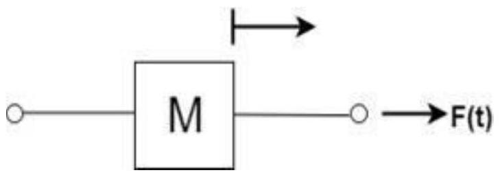
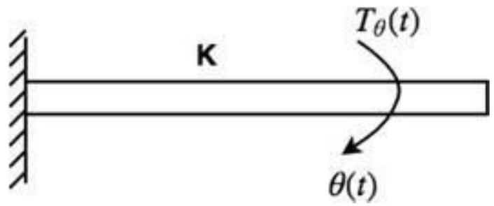
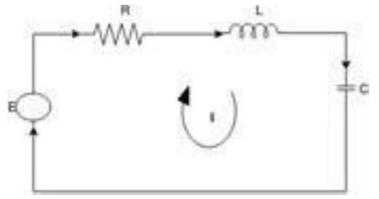
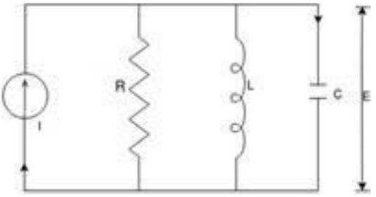

Unit-3: Control system Components & Mathematical Modelling of Physical System
Components of Control System:
Feedback controls are widely used in modern automated systems. A feedback control system consists of five basic components: (1) input, (2) process being controlled, (3) output, (4) sensing elements, and (5) controller and actuating devices. These five components are illustrated in Figure 1. The term close-loop feedback control is often used to describe this kind of system.
The input to the system is the reference value, or set point, for the system output. This represents the desired operating value of the output. Using the previous example of the heating system as an illustration, the input is the desired temperature setting for a room. The process being controlled is the heater (e.g., furnace). In other feedback systems, the process might be a manufacturing operation, the rocket engines on a space shuttle, the automobile engine in cruise control, or any of a variety of other processes to which power is applied. The output is the variable of the process that is being measured and compared to the input; in the above example, it is room temperature.
The sensing elements are the measuring devices used in the feedback loop to monitor the value of the output variable. In the heating system example, this function is normally accomplished using a bimetallic strip. This device consists of two metal strips joined along their lengths. The two metals possess different thermal expansion coefficients; thus, when the temperature of the strip is raised, it flexes in direct proportion to the temperature change. As such, the bimetallic strip is capable of measuring temperature. There are many different kinds of sensors used in feedback control systems for automation.
The purpose of the controller and actuating devices in the feedback system is to compare the measured output value with the reference input value and to reduce the difference between them. In general, the controller and actuator of the system are the mechanisms by which changes in the process are accomplished to influence the output variable. These mechanisms are usually designed specifically for the system and consist of devices such as motors, valves, solenoid switches, piston cylinders, gears, power screws, pulley systems, chain drives, and other mechanical and electrical components. The switch connected to the bimetallic strip of the thermostat is the controller and actuating device for the heating system. When the output (room temperature) is below the set point, the switch turns on the heater. When the temperature exceeds the set point, the heat is turned off.
Mathematical Modelling and Representation of a Physical System:
A physical system is a system in which physical objects are connected to perform an objective. We cannot represent any physical system in its real form. Therefore, we have to make assumptions for analysis and synthesis of systems. An idealized physical system is called a physical model. A physical system can be modelled in different ways depending upon the problem and required accuracy with which we have to deal.
There are two types of physical system:
- Mechanical system.
- Electrical system.
Mathematical modelling of the Mechanical system:
There are two types of mechanical systems which we have to study.
- Translational or Linear system.
- Rotational system.
Translational or Linear system:
The motion that takes place along a straight line is called a translational motion. There are three different types of forces that we have to study.
1. Inertia Force:
Consider a body of mass 'M' and acceleration 'a' then according to newton's second law of motion:
1. $F(t) = Ma(t)$
In terms of velocity
In terms of displacement the above equation can be expressed as
2. Damping Force:
For viscous friction, we assume that the damping force is proportional to the velocity.
Where B = Damping Coefficient Unit of B = N/m/sec.
3. Spring Force:
A spring has potential energy. The restoring force of a spring is proportional to the displacement.
Where
K = spring constant of stiffness
Unit of K = N/m
Rotational System:
When the motion of a body takes place about a fixed axis, this type of motion is known as rotational motion. There are three types of torques that resist the rotational motion.
1. Inertia Torque: The property of an element that stores the kinetic energy of rotational motion is called inertia (J). The inertia Torque $T_1$ is the product of the moment of inertia J and angular acceleration $\alpha(t)$.
Where
$\omega(t)$ = angular veloci
$\theta(t)$ = angular displacement
Unit of Torque = N-m
| S.No. | Translational | Rotational |
|---|---|---|
| 1 | Force, F | Torque, T |
| 2 | Acceleration, a | angular acceleration, $\alpha$ |
| 3 | Velocity, v | angular velocity, $\omega$ |
| 4 | Displacement, x | angular displacement, $\theta$ |
| 5 | Mass, M | Moment of inertia, J |
| 6 | Damping Coefficient, B | Rotational damping Coefficient, B |
| 7 | Stiffness | torsional stiffness |
2. Damping Torque: The product of angular velocity $\omega$ and damping coefficient B is known as Damping Torque $T_D(t)$.
1. $TD(t) = B\omega(t)$
2.
3. $TD(t) = B d/dt \theta(t)$
3. Spring Torque:
Spring Torque $T\theta(t)$ is the product of torsional stiffness and angular displacement.
1. $T\theta(t) = K\theta(t)$
Unit of K = N-m/rad.
By comparing equations, we get an analogous system:
Mathematical modelling of the Electrical system:
Analogous System
Consider a series RLC circuit.
Apply Kirchhoff's voltage law
In terms of charge equation becomes
Now consider a parallel RLC circuit
Now apply Kirchhoff's current law
In terms of magnetic flux linkage, the above equation becomes Since
Force Current Analogy
| S.No. | Mechanical Translational System | Electrical System |
|---|---|---|
| 1 | Force (F) | Voltage (E) |
| 2 | Mass (M) | Inductance (L) |
| 3 | Stiffness(K) ( Elastance, 1/K) | Reciprocal of Capacitance (1/C) Capacitance (C) |
| 4 | Damping Coefficient (B) | Resistance R |
| 5 | Displacement (x) | Charge (q) |